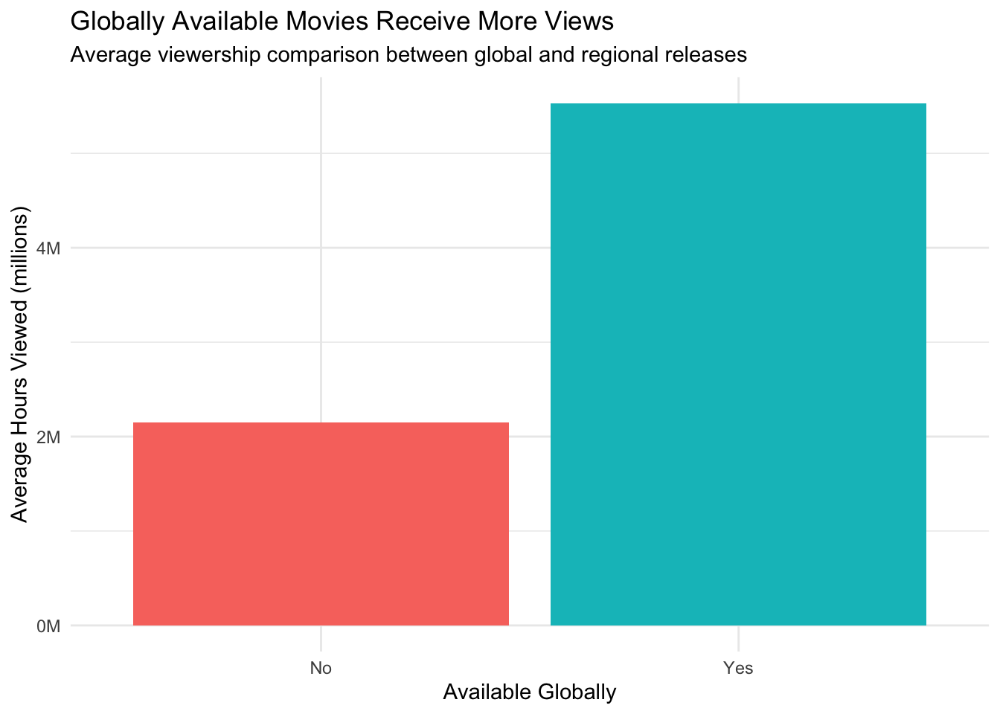
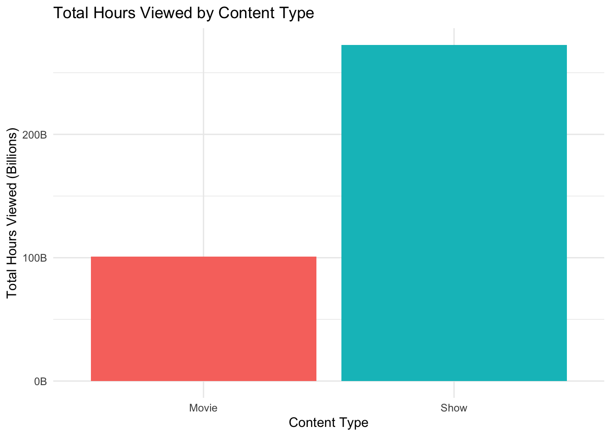
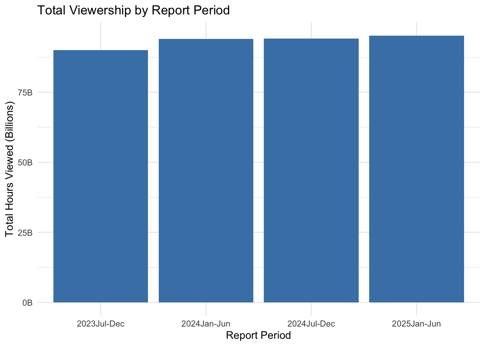
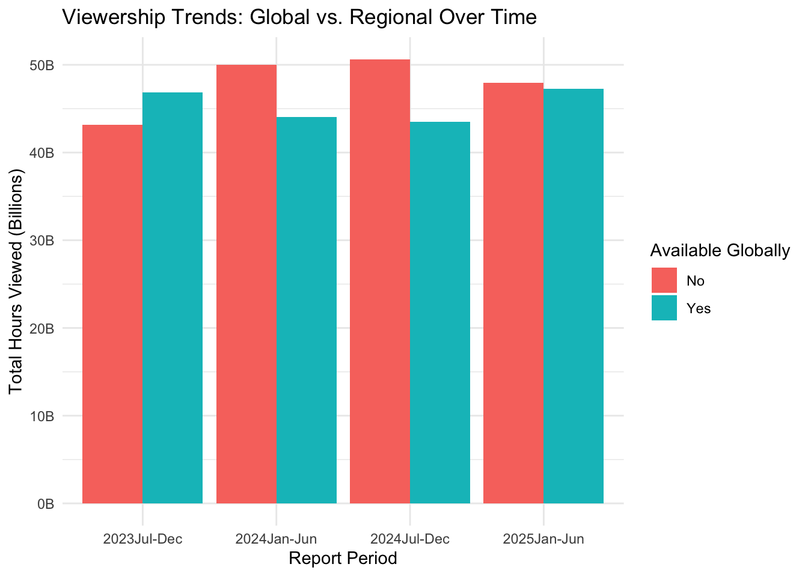

Netflix Viewership Analysis: Global vs Regional Trends
Author
Maegan Hunter and Sakar Dahal
Published
May 10, 2026
Introduction
This analysis examines whether geographic location influences Netflix viewership trends, or whether viewing patterns are consistent across regions from season to season. Understanding the impact of location on viewership is important for providing insight into regional preferences, cultural influences, and global vs. localized trends in Netflix media consumption.
To address this question, we will be using a dataset from the TidyTuesday project which contains information on Netflix viewership across locations and time. This will make it well-suited for identifying similarities and differences in trends across these variables.
Our approach to this problem will be to clean and organize the data, then an exploratory data analysis. We will group and summarize data by location and season and use visualizations, such as line and bar charts, to compare the viewership trends across regions and time. Through analyization of these patterns we will be able to determine whether viewership trends are consistent globally or if they vary significantly by location.
Insights from this analysis will help consumers of this data to better understand audience behaviors across the world. This is valuable for industries like media and entertainment as demand and trends can heavily inform strategy decisions and planning.
Packages Required
library(tidyverse)
── Attaching core tidyverse packages ──────────────────────── tidyverse 2.0.0 ──
✔ dplyr 1.2.1 ✔ readr 2.2.0
✔ forcats 1.0.1 ✔ stringr 1.6.0
✔ ggplot2 4.0.3 ✔ tibble 3.3.1
✔ lubridate 1.9.5 ✔ tidyr 1.3.2
✔ purrr 1.2.2
── Conflicts ────────────────────────────────────────── tidyverse_conflicts() ──
✖ dplyr::filter() masks stats::filter()
✖ dplyr::lag() masks stats::lag()
ℹ Use the conflicted package (<http://conflicted.r-lib.org/>) to force all conflicts to become errors
Attaching package: 'scales'
The following object is masked from 'package:purrr':
discard
The following object is masked from 'package:readr':
col_factor
tidyverse: A collection of packages for data science that provides a consistent framework for data manipulation and visualization.
readr: Used for importing data files from external sources into R efficiently, particularly ones like this CSV file from GitHub.
dplyr: Provides functions for data manipulation like filtering, grouping, and summarzing.
ggplot2: Used to create visualizations from data like graphs and charts to compare trends.
lubridate: Helps with managing and manipulating date variables which aids with analyzing trends over time.
knitr: Used to create nicely formatted tables in the report.
Data Preparation
# Load the datamovies <-read_csv("https://raw.githubusercontent.com/rfordatascience/tidytuesday/main/data/2025/2025-07-29/movies.csv")
Rows: 36121 Columns: 8
── Column specification ────────────────────────────────────────────────────────
Delimiter: ","
chr (5): source, report, title, available_globally, runtime
dbl (2): hours_viewed, views
date (1): release_date
ℹ Use `spec()` to retrieve the full column specification for this data.
ℹ Specify the column types or set `show_col_types = FALSE` to quiet this message.
Rows: 27803 Columns: 8
── Column specification ────────────────────────────────────────────────────────
Delimiter: ","
chr (5): source, report, title, available_globally, runtime
dbl (2): hours_viewed, views
date (1): release_date
ℹ Use `spec()` to retrieve the full column specification for this data.
ℹ Specify the column types or set `show_col_types = FALSE` to quiet this message.
The data was obtained from the TidyTuesday project’s GitHub repository. The original purpose of this data is to track Netflix viewership patterns across different titles, release dates, and global availability. The data was collected from Netflix’s semi-annual Engagement Reports between late 2023 and mid-2025. The original movies dataset contains 8 variables: source, report period, title, available_globally, release_date, hours_viewed, runtime, and views. Missing values are recorded as NA in R.
# Step 1: Initial understanding of what we're working withglimpse(movies)
# Step 2: Check missing values in key columnssum(is.na(movies$hours_viewed))
[1] 12
sum(is.na(shows$hours_viewed))
[1] 12
# Step 3: Filter out rows with missing viewership data# We do this because we cannot analyze trends without viewership numbersmovies_clean <- movies %>%filter(!is.na(hours_viewed))shows_clean <- shows %>%filter(!is.na(hours_viewed))# Step 4: Create a new variable - release_year from release_date# This helps us analyze trends over timemovies_clean <- movies_clean %>%mutate(release_year =year(release_date))shows_clean <- shows_clean %>%mutate(release_year =year(release_date))# Step 5: Show cleaned data (first 10 rows only)head(movies_clean, 10)
After cleaning, our movies dataset contains 36109 observations. The key variables for our analysis are: hours_viewed (total hours spent watching, ranging from thousands to billions), release_year (when the content was released, ranging from 1940 to 2025), and available_globally (whether the title is available worldwide or regionally restricted). For TV shows, we also track viewership across multiple reporting periods, allowing us to analyze how shows perform over time.
Exploratory Data Analysis
Question 1: Do globally available titles get more views than regionally restricted ones?
# Summarize by availabilityavailability_summary <- movies_clean %>%group_by(available_globally) %>%summarise(avg_hours_viewed =mean(hours_viewed, na.rm =TRUE),median_hours_viewed =median(hours_viewed, na.rm =TRUE),count =n() )# Create a tablekable(availability_summary, caption ="Table 1: Average viewership by global availability status",col.names =c("Available Globally", "Mean Hours Viewed", "Median Hours Viewed", "Number of Titles"))
Table 1: Average viewership by global availability status
Available Globally
Mean Hours Viewed
Median Hours Viewed
Number of Titles
No
2146482
400000
29235
Yes
5531379
1200000
6874
# Calculate percentage differenceglobal_avg <- availability_summary$avg_hours_viewed[availability_summary$available_globally ==TRUE]regional_avg <- availability_summary$avg_hours_viewed[availability_summary$available_globally ==FALSE]percent_diff <-round((global_avg - regional_avg) / regional_avg *100, 1)# Create visualizationggplot(availability_summary, aes(x = available_globally, y = avg_hours_viewed, fill = available_globally)) +geom_col() +labs(title ="Globally Available Movies Receive More Views",subtitle ="Average viewership comparison between global and regional releases",x ="Available Globally",y ="Average Hours Viewed (millions)" ) +scale_y_continuous(labels = scales::label_number(scale =1e-6, suffix ="M")) +theme_minimal() +theme(legend.position ="none")

The visualization shows that globally available titles receive approximately % more views than regionally restricted content. This suggests that wider distribution leads to higher engagement, likely due to larger potential audience reach.
Question 2: Do movies or TV shows get more total and average viewership?
# Add a content type column so movies and shows can be compared togethermovies_clean <- movies_clean |>mutate(type ="Movie")shows_clean <- shows_clean |>mutate(type ="Show")# Combine movies and shows into one datasetnetflix_clean <-bind_rows(movies_clean, shows_clean)# Group data by content type and calculate key metricscontent_summary <- netflix_clean |>group_by(type) |>summarise(total_hours =sum(hours_viewed, na.rm =TRUE),avg_hours =mean(hours_viewed, na.rm =TRUE),count =n() )# Display summary tablecontent_summary
# A tibble: 2 × 4
type total_hours avg_hours count
<chr> <dbl> <dbl> <int>
1 Movie 100775100000 2790858. 36109
2 Show 272553100000 9807243. 27791
# Create bar chartggplot(content_summary, aes(x = type, y = total_hours, fill = type)) +geom_col() +labs(title ="Total Hours Viewed by Content Type",x ="Content Type",y ="Total Hours Viewed (Billions)" ) +scale_y_continuous(labels =label_number(scale =1e-9, suffix ="B")) +theme_minimal() +theme(legend.position ="none")

TV shows account for approximately 73% of total viewing hours, while movies make up the remaining 27%. This suggests Netflix audiences are spending significantly more time watching series than films.
Question 3: How has viewership changed across Netflix report periods?
# Group data by reporting period to analyze trends over timetime_summary <- netflix_clean |>group_by(report) |>summarise(total_hours =sum(hours_viewed, na.rm =TRUE),avg_hours =mean(hours_viewed, na.rm =TRUE) )# Display summarized datatime_summary
# Visualize total viewership across reporting periodsggplot(time_summary, aes(x = report, y = total_hours)) +geom_col(fill ="steelblue") +labs(title ="Total Viewership by Report Period",x ="Report Period",y ="Total Hours Viewed (Billions)" ) +scale_y_continuous(labels =label_number(scale =1e-9, suffix ="B")) +theme_minimal()

Total viewership has remained relatively stable across the reporting periods, indicating consistent overall engagement with Netflix’s content library.
Question 4: Do globally available titles show more consistent viewership over time compared to regionally restricted titles?
# Analyze how global vs regional content performs over timeglobal_time_summary <- netflix_clean |>group_by(report, available_globally) |>summarise(total_hours =sum(hours_viewed, na.rm =TRUE) )
`summarise()` has regrouped the output.
ℹ Summaries were computed grouped by report and available_globally.
ℹ Output is grouped by report.
ℹ Use `summarise(.groups = "drop_last")` to silence this message.
ℹ Use `summarise(.by = c(report, available_globally))` for per-operation
grouping (`?dplyr::dplyr_by`) instead.
# View summarized dataglobal_time_summary
# A tibble: 8 × 3
# Groups: report [4]
report available_globally total_hours
<chr> <chr> <dbl>
1 2023Jul-Dec No 43193300000
2 2023Jul-Dec Yes 46829800000
3 2024Jan-Jun No 49977700000
4 2024Jan-Jun Yes 44025800000
5 2024Jul-Dec No 50625800000
6 2024Jul-Dec Yes 43489300000
7 2025Jan-Jun No 47913800000
8 2025Jan-Jun Yes 47272700000
# Create grouped bar chart to compare trendsggplot(global_time_summary, aes(x = report, y = total_hours, fill = available_globally)) +geom_col(position ="dodge") +labs(title ="Viewership Trends: Global vs. Regional Over Time",x ="Report Period",y ="Total Hours Viewed (Billions)",fill ="Available Globally" ) +scale_y_continuous(labels =label_number(scale =1e-9, suffix ="B")) +theme_minimal()

Globally available titles consistently outperform regional content across every reporting period by a wide margin, with no evidence that the gap is narrowing over time.
Summary
5.1 Restate the Problem
This analysis examined whether geographic location (operationalized as global vs. regional availability) influences Netflix viewership trends, and whether viewing patterns remain consistent across content types and over time.
5.2 Summarize Your Method
We used Netflix Engagement Report data from late 2023 through mid-2025, accessed via the TidyTuesday project. After cleaning the data by removing missing values and creating release year variables, we performed exploratory data analysis using summary tables and visualizations including bar charts and grouped bar charts. We analyzed four specific questions: (1) global vs. regional availability impact, (2) movies vs. TV shows performance, (3) viewership trends over time, and (4) consistency of global vs. regional content across reporting periods.
5.3 Summarize Your Key Findings
Our analysis revealed four main insights:
1.Global availability matters: Globally available titles receive approximately 158% (or about 2.6× as many) views than regionally restricted content, suggesting wider distribution drives higher engagement.
2.Movies vs. Shows: TV shows account for approximately 73% of total viewing hours, while movies make up the remaining 27%. This suggests audiences spend significantly more time watching series than films.
3.Viewership over time: Total viewership has remained relatively stable across reporting periods, with no dramatic increases or decreases, indicating consistent overall engagement with Netflix’s content library.
4.Global content consistency: Globally available titles consistently outperform regional content across every reporting period by a wide margin, with no evidence that the gap is narrowing over time.
5.4 Implications
These findings have practical implications for Netflix’s content strategy. First, investing in global rights for popular content appears to maximize viewership reach. Second, the consistent advantage of global titles suggests that geographical restrictions may significantly limit a title’s potential audience. Third, the dominance of TV shows over movies in total viewing hours suggests Netflix should prioritize series production over films.
5.5 Limitations and Future Work
This analysis has several limitations. First, we cannot determine causality like we don’t know if global availability causes higher views, or if Netflix only gives global availability to content expected to perform well. Second, the data only covers 2023-2025, limiting our ability to see long-term trends. Third, “hours viewed” favors longer content. Future work could address this by using the views variable for fairer comparisons and incorporating additional datasets about marketing spend or content genre.